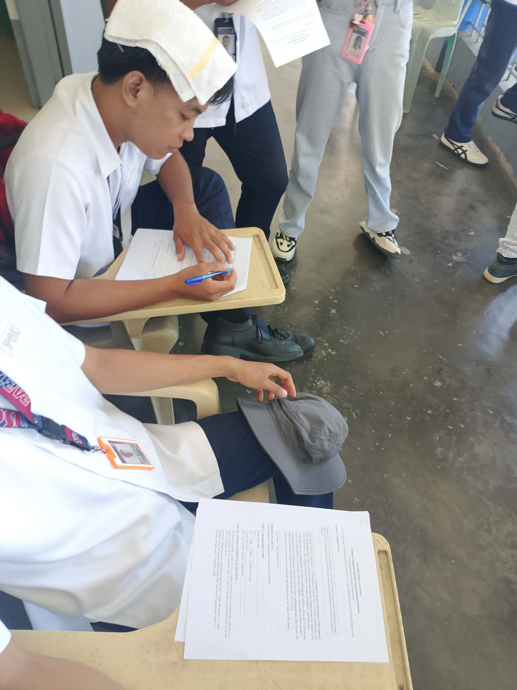
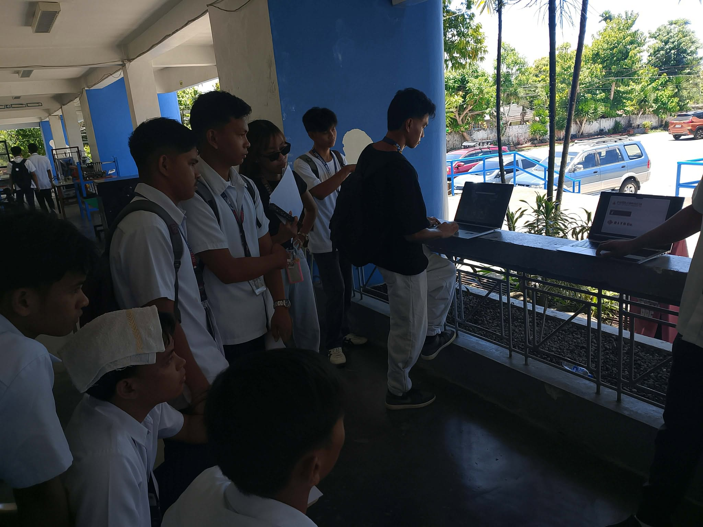
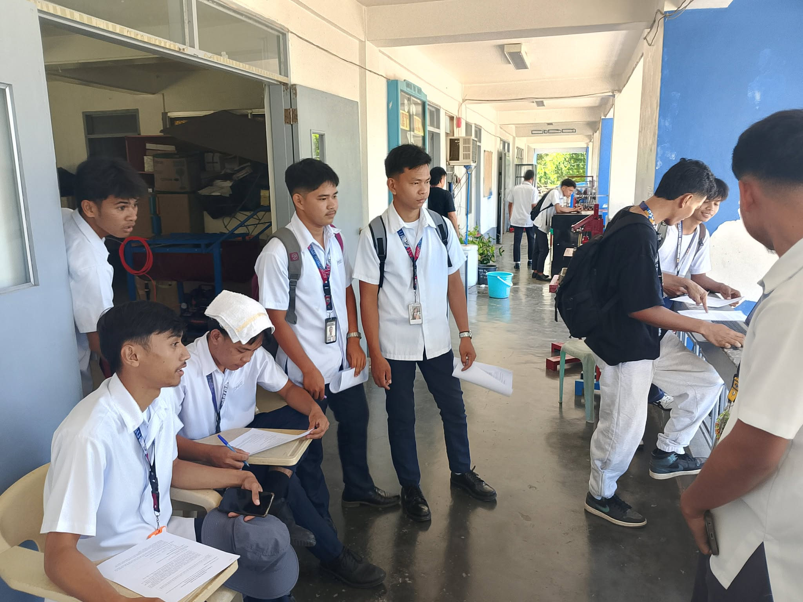
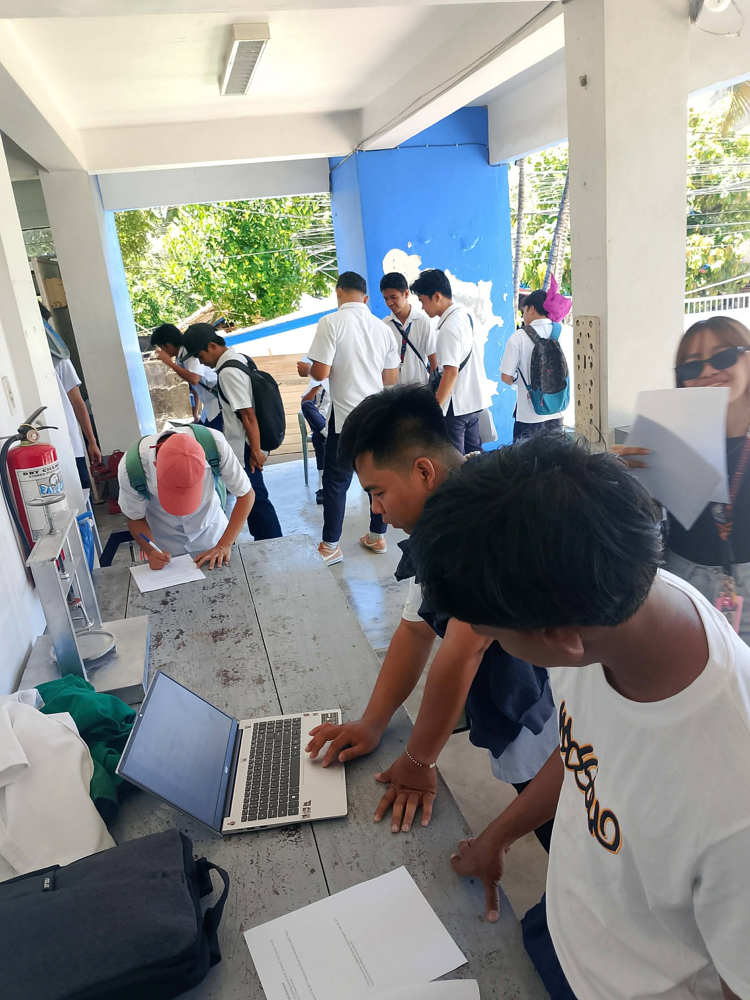
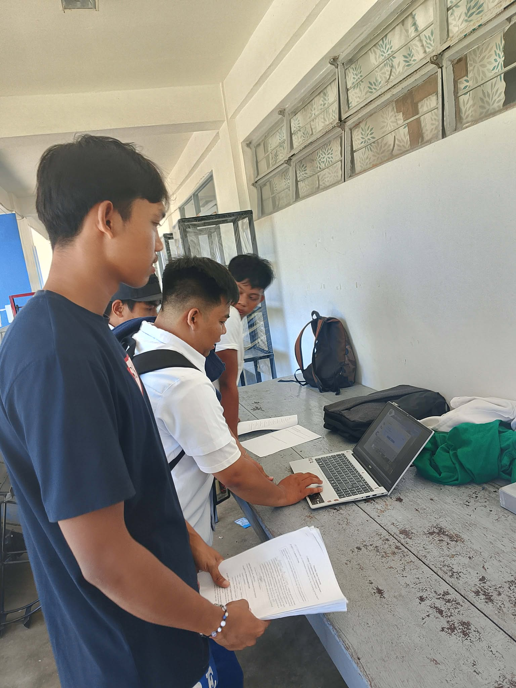

GICT Translink is a centralized travel hub for travellers of the Goa Integrated Central Terminal in Goa, Camarines Sur.
The Goa Integrated Central Terminal hosts several bus companies that offer rides going to Metro Manila and in busy times inquiring on trips are quite troublesome due to the volume of travellers in the terminal. This not only affect the travellers but also the companies which may be bombarded with the amount of people inquiring and booking.
The GICT Translink eliminate all of that with just a few touches. Booking and inquiring for trips can be done remotely in the comfort of your own home.
Republic Act No. 10173 or the Data Privacy Act of 2012 (DPA) protects the fundamental human right to privacy. All personal data collected in this study will be secured and used only for academic purposes.
I voluntarily agree to participate in the research study titled “GICT TransLink: An Information System for Live Bus Scheduling and Terminal Management.”
Open Full Consent Form PDFThe respondents for this study is the Bachelor of Automotive Technology 3rd Year Section A and B.
The usability testing survey and instruments are included in the same consent form PDF file.
Open PDF File




The usability evaluation of the GICT Translink system involved 39 respondents from the Bachelor of Automotive Technology 3rd Year Sections A and B using the System Usability Scale (SUS) questionnaire.
The computed average SUS score of the system is 64.55, indicating an acceptable usability rating. Most respondents found the system functional, understandable, and beneficial for remote trip inquiry and booking purposes.
The GICT Translink system shows strong potential in improving the travel experience for passengers and terminal operators by providing a centralized and accessible platform for inquiries and booking. Although the system achieved acceptable usability results, further refinements can still improve user experience and functionality.
View Full CSV Data